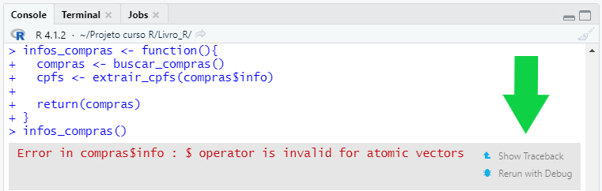
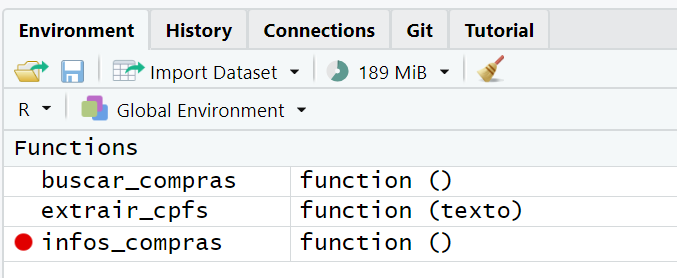
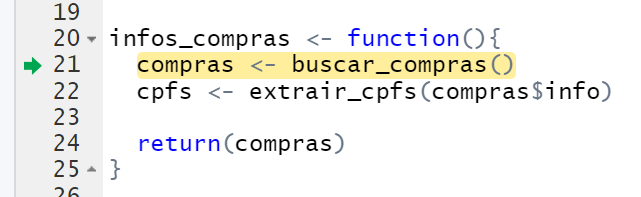
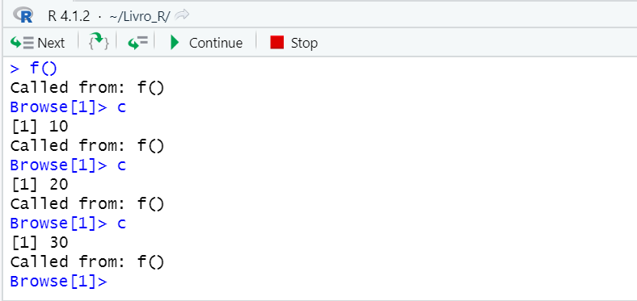
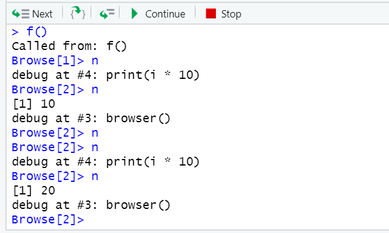

library(sudoku)
playSudoku(
z = matrix(sample(0:9, size = 9, replace = TRUE))
)17 Debugging - Resolvendo bugs em suas funções
17.1 Introduzindo debugging
Em nosso dia-a-dia, desenvolvemos vários scripts e funções no R, com o objetivo de formar um programa que executa uma tarefa específica. Temos uma sensação de conquista quando conseguimos desenvolver esse programa, e estamos ansiosos para testá-lo pela primeira vez. Criamos a expectativa de que o programa funcione perfeitamente bem, gerando todos os resultados esperados. Porém, no mundo real, quando executamos pela primeira vez o nosso programa, o que ocorre na maioria das vezes são vários erros distintos.
Essa é uma situação extremamente comum, que ocorre em qualquer linguagem de programação, e que atinge desde os mais novatos até os mais experientes programadores. Quanto mais experiência você possui em uma determinada linguagem, menor tendem a ser as suas taxas de erros. Contudo, essas taxas nunca chegam efetivamente a zero.
Pois é sempre muito fácil de se esquecer de uma vírgula aqui ou ali, de fechar um parêntese ou chave, ou ainda, de se certificar que os seus objetos estejam corretamente definidos. Além desses fatos, computadores são extremamente precisos, e, por esse motivo, conseguem perceber facilmente quando algo está fora do lugar.
Sendo assim, um erro é a forma que seu computador tem de te indicar que há algo de errado em seu programa. Logo, em alguma parte desse programa, você pode não ter sido claro o suficiente com suas intenções, ou ainda, você pode ter tentado fazer algo que não é possível de ser feito.
O termo debugging se refere ao ato de analisar, identificar e corrigir as fontes desses erros em nossos programas. Já o termo bug é o nome dado à um erro qualquer em seu programa. Logo, o seu programa pode ter um ou vários bugs (ou erros) diferentes. O seu trabalho é analisar cada um desses bugs e corrigi-los. Nas próximas seções vamos descrever algumas estratégias de debugging.
É comum certos bugs estarem relacionados entre si, de modo que, quando você identifica e corrige um deles, todos os demais bugs são automaticamente solucionados. Porém, uma parte considerável dos bugs podem ser independentes entre si. Nessa situação, você é obrigado a identificar e corrigir individualmente cada um deles.
17.2 Tente sempre melhorar a organização de seu programa
Bugs são sempre muito difíceis de se evitar. Especialmente quando estamos construindo um programa relativamente grande e complexo. Mesmo assim, temos sempre a oportunidade de adotarmos pequenas ações que nos ajudam a identificar e resolver esses bugs no futuro.
Uma dessas ações é sempre se preocupar com a organização de seu programa. Um programa (ou um script) é melhor organizado quando ele é repartido em várias funções pequenas. Cada função pequena executa uma única tarefa e, tenta incluir apenas os comandos mínimos para executar essa tarefa.
Dessa forma, você tem uma chance muito maior de compreender por completo, como o seu programa funciona e, mais importante ainda, você tem uma facilidade muito maior de identificar onde os erros de seu programa estão localizados.
Vamos para um exemplo prático. David Brahm e Greg Snow construíram um pacote no R, chamado sudoku, o qual é capaz de resolver jogos de sudoku. A função playSudoku() é a principal função desse pacote. Você fornece a ela uma matriz contendo os valores iniciais de seu jogo e, como resultado, a função vai resolver esse jogo para você.
Porém, perceba no exemplo abaixo, que um erro foi retornado ao fornecer o meu jogo à função.
Solving...Error in z[i, j] : subscript out of boundsAo pesquisar pelo erro no Google, você pode chegar a um artigo útil do StackOverflow1. Esse artigo descreve que o erro subscript out of bounds ocorre sempre que tentamos acessar um elemento que está fora dos limites de um objeto (em outras palavras, um elemento que não existe nesse objeto). Por exemplo, quando tentamos acessar o 5° elemento de um vetor que possui apenas 4 elementos, ou a 5° coluna de um data.frame que possui apenas 3 colunas, e assim por diante.
Apesar dessa informação ser útil, ainda temos uma questão fundamental para identificar e corrigir esse erro, que é onde ele ocorre. Onde? Em que função? Em que parte específica da função estamos tentando acessar um elemento que está fora dos limites?
Como primeiro instinto, você talvez tente compreender o código-fonte da função playSudoku() com o comando sudoku::playSudoku. Porém, você vai rapidamente perceber o quão grande é essa função playSudoku(). Temos uma quantidade enorme de comandos sendo executados dentro dela, e, cada um desses vários comandos podem ser a fonte de nosso erro.
Ao traçar o traceback que levou ao erro, como demonstrado abaixo, você pode identificar que o erro na verdade surgiu dentro da função solveSudoku(), que é executada pela função playSudoku().
traceback()## 2: solveSudoku(z, print.it = FALSE)
## 1: sudoku::playSudoku(z = matrix(sample(0:9, size = 9, replace = TRUE)))Apesar de útil, essa nova informação também não é de grande ajuda. Pois ao observar o código-fonte da função solveSudoku() com o comando sudoku::solveSudoku, você percebe que essa função também é muito grande! Temos novamente várias possibilidades para a fonte de nosso erro.
Você já sabe que o nosso erro geralmente ocorre quando estamos tentando acessar um elemento de um objeto, ou seja, quando estamos utilizando subsetting sobre um objeto. Tendo isso em mente, você talvez pense em procurar no código-fonte de solveSudoku(), por todas as partes em que as funções de subsetting ([ e [[) são utilizadas. Pois essas partes são as potenciais fontes do erro.
Contudo, temos uma nova frustração. Pois existem em torno de 35 chamadas diferentes à essas funções no código-fonte de solveSudoku(). Em qual dessas 35 chamadas, o nosso erro ocorre?
Concluindo, o problema principal destacado aqui, é que as funções playSudoku() e solveSudoku() são muito grandes. Elas tentam abarcar sozinhas uma parte substancial do programa, e, como consequência disso, temos uma dificuldade muito maior de identificarmos as origens de nossos erros. O ideal, seria que cada etapa fosse quebrada em múltiplas funções pequenas.
Pois se um erro surgir dentro de uma função pequena, você tem um conjunto muito menor de comandos para analisar. Em outras palavras, você tem menos possibilidades para a fonte de seu erro.
Por outro lado, quando os seus erros surgem dentro de uma função muito grande, cada um dos vários e vários comandos que essa função executa são candidatos para a origem do seu erro. Logo, você tem o trabalho de analisar um conjunto muito maior de possibilidades.
17.3 Uma boa estratégia de debugging
Segundo WICKHAM (2015a), encontrar a causa raiz de um bug é sempre um processo desafiador. Por isso, ter uma boa estratégia de debugging é sempre uma boa ajuda nesse processo. O autor dita 4 passos essenciais nessa estratégia, que são:
Google: sempre que encontrar um erro, tente primeiro pesquisar por ele no Google. Pois outras pessoas podem ter enfrentado esse mesmo erro anteriormente, e, publicado a solução na internet;
Monte um exemplo reprodutível do erro: para analisar e compreender esse erro, você terá que executar várias vezes o mesmo código que gera esse erro. Para que esse processo seja o mais rápido possível, vale a pena investir um tempo organizando um exemplo mínimo e simples que reproduza esse erro.
Descubra de onde esse erro está surgindo: compreender e analisar um determinado erro, se torna uma atividade muito mais fácil quando você sabe de onde exatamente esse erro está surgindo;
Conserte o erro e realize testes para confirmar que ele foi solucionado: depois de compreender como o erro acontece, e, aplicar uma solução para esse erro, é importante que você teste novamente o seu código, para se certificar que o erro foi de fato solucionado;
17.4 Compreendendo tracebacks
Um traceback representa a sequência de funções executadas que geraram um determinado erro. Sendo assim, um traceback nos mostra justamente quais foram as funções executadas antes do erro surgir. Essa informação é extremamente útil quando desejamos localizar onde exatamente o erro ocorre.
Como exemplo, a função infos_compras() exposta abaixo executa dentro dela outras 2 funções chamadas buscar_compras() e extrair_cpfs(). Perceba também que, ao executarmos essa função, um erro é retornado pela expressão compras$info.
library(readr)
library(dplyr)
buscar_compras <- function(){
github <- "https://raw.githubusercontent.com/"
pasta <- "pedropark99/Curso-R/master/Dados/"
arquivo <- "compras.txt"
texto <- readr::read_file(paste0(github, pasta, arquivo))
texto <- unlist(stringr::str_split(texto, "\n"))
return(texto)
}
extrair_cpfs <- function(texto){
pcpf <- "([0-9]{3}[.][0-9]{3}[.][0-9]{3}[-][0-9]{2})"
cpfs <- gsub(paste0("(.*)", pcpf, "(.*)"), "\\2", texto)
return(cpfs)
}
infos_compras <- function(){
compras <- buscar_compras()
compras$cpfs <- extrair_cpfs(compras$info)
return(compras)
}
infos_compras()## Error in compras$info : $ operator is invalid for atomic vectors Para identificarmos qual a função onde essa expressão compras$info foi executada, podemos olhar para o traceback desse erro. Para acessarmos esse traceback, precisamos apenas executar a função traceback() como demonstrado abaixo.
traceback()## 4: is.factor(x)
## 3: gsub(paste0("(.*)", pcpf, "(.*)"), "\\2", texto) at #3
## 2: extrair_cpfs(compras$info) at #3
## 1: infos_compras()Como você pode ver acima, a expressão que levantou o erro (compras$info) foi executada dentro da função is.factor(), que por sua vez, foi executada dentro da função gsub(), e, assim por diante. Portanto, a ordem (ou a sequência) de funções executadas antes que o erro fosse levantado foi infos_compras() \(\rightarrow\) extrair_cpfs() \(\rightarrow\) gsub() \(\rightarrow\) is.factor().
Se você está trabalhando dentro do RStudio, você também pode acessar o traceback de um erro, ao apertar o botão “Show Traceback”, que aparece à direita de todo erro que surge no console. Esse botão está destacado na Figura 17.1.

17.5 O método print() ou print debugging
Uma das grandes dificuldades que emergem das funções, é que elas executam as suas tarefas em um ambiente separado do seu. Por causa disso, você não consegue visualizar com facilidade todos os resultados e objetos que estão sendo gerados dentro dessa função. Como consequência, a sua investigação de erros fica comprometida.
Para solucionar esse problema, vários programadores costumam recorrer ao método print(), ou, como é mais conhecido dentro da comunidade de programação, print debugging.
Com o traceback que mostramos na seção anterior, nós já descobrimos que o erro surge a partir da função infos_compras(), pois a sequência de funções executadas começa por essa função. Tendo isso em mente, um bom próximo passo seria analisarmos se todas as nossas condições ou pressupostos estão sendo respeitados dentro dessa função. Pois se um erro surgiu dessa função, é provável que ela não soube lidar com algo que está fora dessas condições e pressupostos.
Uma das formas mais simples e eficazes de se realizar essa análise, é imprimir ou mostrar informações em seu console que confirmam que esses pressupostos foram respeitados. Para isso, podemos utilizar funções como print() ou cat().
Portanto, a técnica print debugging consiste em inserir expressões de print() em partes chaves de seu código. Especialmente dentro de funções e loops, que são as partes em que você possui menor visibilidade. Dessa forma, vamos nos certificando aos poucos, que todos os objetos importantes estão sendo criados, e que eles são interpretados pelos tipos de dados corretos (ou esperados).
Vários tipos de erros surgem porque uma condição lógica não está funcionando da forma como você esperava, ou, porque um objeto importante não foi definido, ou ainda, porque um valor NA surge em uma parte inesperada de seu programa, ou mais, porque você esperava que um objeto fosse associado ao tipo de dado A, quando na verdade, ele acaba sendo associado ao tipo de dado B.
Dois objetos principais (compras e cpfs) são criados dentro da função infos_compras(). Geralmente, estamos sempre interessados em identificar duas informações principais sobre um determinado objeto, que é a sua estrutura e o tipo de dado associado a ele.
Com o comando print(str(objeto)) podemos identificar essas duas informações de uma vez só. Porém, o resultado de str() pode ser muito grande a depender do objeto, por isso, para visualizar rapidamente a estrutura do objeto, eu costumo olhar apenas os 5 primeiros elementos do objeto, com print(objeto[1:5]), já, para o tipo de dado, eu busco o resultado da função typeof(), com print(typeof(objeto)).
Como exemplo inicial, vamos inserir esses dois comandos de print dentro do corpo da função infos_compras() para analisarmos o objeto compras mais de perto. Perceba que estou redefinindo (ou recriando) a função infos_compras() para adicionar esses comandos de print dentro dela. Em seguida, executo novamente a função para visualizarmos as novas informações.
infos_compras <- function(){
compras <- buscar_compras()
cat("Primeiros elementos:\n")
print(compras[1:5])
cat("Tipo de dado:\n")
print(typeof(compras))
compras$cpfs <- extrair_cpfs(compras$info)
return(compras)
}
dados <- infos_compras()## Primeiros elementos:
## [1] "\"Márcio390.287.917-210akqzS2tk$URMcLOk5Q\""
## [2] "\"Igor944.236.416-254tLo8&S9WtXg05fsdU\""
## [3] "\"Márcio395.304.955-57pfwji9Z4Q6dZxSWZV7#7Z$J\""
## [4] "\"Isabela322.900.842-74K5D6b$xAnY&QJ1$XQzE2f\""
## [5] "\"Álvaro475.767.740-583WWonElfbisKD1GiIVS\""
## Tipo de dado:
## [1] "character"
## Error in compras$info : $ operator is invalid for atomic vectorsO erro permanece, mas agora, mostramos algumas informações relevantes sobre o objeto compras. Perceba que este objeto é um vetor do tipo character. Ao extrair essa informação, você é capaz de compreender o porquê do erro estar acontecendo. Pois o objeto compras é um vetor atômico, e, a mensagem de erro fala bem claramente que o operador $ é invalido para este tipo de objeto.
Tendo identificado o porquê do erro, temos agora a capacidade de solucionar esse erro. Podemos por exemplo, transformar o objeto compras em um data.frame, e incluir o resultado de buscar_compras() em uma coluna chamada info. Pois o operador $ é válido para data.frame’s. Repare abaixo que, após essas alterações, a função infos_compras() foi executada sem erros.
infos_compras <- function(){
compras <- data.frame(
info = buscar_compras()
)
compras$cpfs <- extrair_cpfs(compras$info)
return(compras)
}
dados <- infos_compras()
head(dados)## info cpfs
## 1 "Márcio390.287.917-210akqzS2tk$URMcLOk5Q" 390.287.917-21
## 2 "Igor944.236.416-254tLo8&S9WtXg05fsdU" 944.236.416-25
## 3 "Márcio395.304.955-57pfwji9Z4Q6dZxSWZV7#7Z$J" 395.304.955-57
## 4 "Isabela322.900.842-74K5D6b$xAnY&QJ1$XQzE2f" 322.900.842-74
## 5 "Álvaro475.767.740-583WWonElfbisKD1GiIVS" 475.767.740-58
## 6 "Rafael031.357.966-89bOzZ7#2JBcsd!sWzaeNY" 031.357.966-8917.6 Modo debug do R
Na seção anterior, mostramos algumas informações essenciais sobre os objetos que estavam sendo criados dentro da função infos_compras(), e, com essas informações pudemos identificar e corrigir a fonte do nosso erro. Portanto, debugging é uma atividade puramente de coleta de informações sobre o nosso programa. Quando temos um erro, nós buscamos informações para compreendê-lo, pois só assim vamos saber como corrigi-lo.
Na seção anterior, utilizamos a função print() para coletarmos essas informações. Mas o próprio R possui um modo especial de execução chamado debug. Neste modo, temos um ambiente onde podemos coletar essas informações de maneira interativa e prática. Com isso, não temos o trabalho de redefinir múltiplas vezes as nossas funções.
Como exemplo, vamos voltar à nossa função infos_compras(). Repare abaixo que estou redefinindo a função para o seu estado inicial. Portanto, quando eu executo novamente essa função, o erro anterior volta a aparecer.
infos_compras <- function(){
compras <- buscar_compras()
compras$cpfs <- extrair_cpfs(compras$info)
return(compras)
}
infos_compras()## Error in compras$info : $ operator is invalid for atomic vectors 17.6.1 Inserindo breakpoints em suas funções
Para utilizar este modo debug do R, você precisa inserir um breakpoint em seu código. Um breakpoint representa o ponto (ou a linha) em seu script, que você deseja parar a execução, e, analisar o estado atual de seu programa. Isto é, o R não possui um botão de “Pare agora!”, por isso, você precisa dizer antes ao R, quando ele deve pausar a execução de seu código.
Para adicionar um breakpoint você tem três alternativas principais (existem outras menos comuns). Todas elas giram em torno da função browser(). Apesar dos resultados serem basicamente os mesmos, uma dessas alternativas oferece vantagens mais importantes que as outras.
Essas alternativas são: 1) inserir manualmente a função browser() dentro do body de sua função de interesse; ou 2) utilizar a função debug() para inserir essa chamada à função browser(); ou 3) permitir que o próprio RStudio faça esse trabalho por você.
A primeira alternativa, consiste em inserir uma chamada à função browser() dentro do body da função que você está investigando. A função browser() advém dos pacotes básicos do R. Tudo que ela faz é criar um breakpoint e acionar o modo debug do R no instante em que ela é avaliada.
A questão fundamental aqui é: onde inserir esse breakpoint? Para responder a essa pergunta, você precisa localizar a linha de seu script onde você deseja parar a execução e investigar o estado atual.
Por exemplo, utilizando a primeira alternativa citada, queremos investigar a função infos_compras(), pois sabemos que o erro surge a partir dessa função. Por isso, vou redefinir essa função, incluindo um comando browser() logo na primeira linha do body da função. Sendo assim, a execução será interrompida logo no início de infos_compras().
infos_compras <- function(){
browser()
compras <- buscar_compras()
compras$cpfs <- extrair_cpfs(compras$info)
return(compras)
}Já a segunda alternativa, consiste em aplicar a função debug() sobre a função que você deseja investigar. Ou seja, ao aplicar a função debug() sobre uma outra função, uma chamada à browser() será incluída na primeira linha do body dessa outra função.
Tendo isso em mente, como desejamos parar a execução na função infos_compras(), poderíamos executar o comando debug(infos_compras). Após esse comando, se você executar a função infos_compras(), o modo debug será automaticamente acionado, logo na primeira linha da função2.
infos_compras <- function(){
compras <- buscar_compras()
compras$cpfs <- extrair_cpfs(compras$info)
return(compras)
}
debug(infos_compras)
### Ao executar a função, você entrará automaticamente
### em modo debug
infos_compras()
### Para retornar ao estado inicial da função
### utilize undebug()
undebug(infos_compras)Em contrapartida, a terceira alternativa, consiste em permitir que o próprio RStudio insira esse comando browser() dentro de sua função com apenas um clique em seu script. Obviamente, para utilizar essa terceira alternativa, você precisa estar trabalhando com o R através do RStudio.
Em resumo, essa terceira alternativa citada consiste em clicar (com o botão esquerdo do mouse) à esquerda do número da linha em que você deseja inserir o breakpoint.
Portanto, eu procuro pela definição dessa função infos_compras() em meu script aberto no RStudio e, identifico que a primeira linha do body dessa função, está na linha 21 de meu script (como demonstrado na Figura 17.2). Logo, eu clico à esquerda do número 21, e, como resultado, uma bola vermelha aparece ao lado desse número, indicando assim, que um novo breakpoint foi adicionado àquela linha.

Essa mesma bola vermelha também aparece em sua janela de Environment do RStudio, logo ao lado do nome da função onde esse breakpoint foi inserido.

Você também pode adicionar esse mesmo breakpoint, ao acionar o atalho Shift + F9, quando o cursor de seu mouse estiver na linha desejada.
Contudo, caso o objeto da função em questão, ainda não tenha sido criado em sua sessão, o RStudio vai levantar um aviso, dizendo que o breakpoint será adicionado assim que o seu script for executado. Esse aviso está apresentado na Figura 17.4. Perceba que, quando este tipo de situação acontece, a bola vermelha presente em seu script fica oca.

Após esse processo, ao observamos a definição da função infos_compras(), podemos perceber que essa função é agora um objeto de classe "functionWithTrace". Apesar da classe ter sido modificada, no fundo, tudo o que o RStudio fez foi inserir um comando browser() dentro do corpo de infos_compras(), mesmo que esse comando não esteja visível à primeira vista.
infos_compras## Object with tracing code, class "functionWithTrace"
## Original definition:
## function(){
## compras <- buscar_compras()
## compras$cpfs <- extrair_cpfs(compras$info)
##
## return(compras)
## }
##
## ## (to see the tracing code, look at *body*(object))O resultado entre as três alternativas é basicamente o mesmo. Porém, configurar esses breakpoints pelas ferramentas que o RStudio oferece é preferível a utilizar a função debug(), ou, inserir manualmente comandos browser(). Pois é mais simples de se configurar, e, você não corre o risco de se esquecer de retirar os comandos browser() de suas funções, após resolver todos os bugs (WICKHAM, 2015a).
17.6.2 Entrando em modo debug
Você consegue identificar se o seu R está em modo debug ou não, ao observar o indicador de seu console. Caso ele esteja no formato Browse[n]>, você está no modo debug. Porém, se ele estiver no formato tradicional com o símbolo de “maior que” (>), você está no modo “normal” do R.
Perceba na Figura 17.5, que, assim que eu executo a função infos_compras(), o indicador de meu console passa do formato > para Browse[n]>, indicando assim, que eu entrei no modo debug. Além disso, perceba também que um conjunto de botões (Next, Continue, Stop, dentre outros) aparece no canto superior do console do RStudio. Esses botões são uma outra forma de você identificar que o seu R está no modo debug.

Portanto, quando executamos a função infos_compras(), o R entra automaticamente em modo debug, pelo simples fato de que essa função contém um breakpoint dentro dela. Este modo debug é ligado assim que o R encontra um breakpoint, isto é, no instante em que a função browser() é executada.
Tendo isso em mente, o R realiza a chamada à função infos_compras(). Entretanto, ele paralisa a execução logo na primeira linha descrita no body dessa função. Pois é justo nessa linha que inserimos o breakpoint.
Caso você esteja dentro do RStudio, se você retornar ao script onde está a definição dessa função, você vai reparar que o RStudio marcou em amarelo essa linha, e adicionou uma seta verde à esquerda. Com isso, o RStudio está te avisando que o seu R está parado especificamente naquela linha, aguardando novas instruções para prosseguir com a execução.

É muito importante destacar que, se o R está parado em uma linha específica, isso significa que ele ainda não executou essa linha. Em outras palavras, a função buscar_compras() ainda não foi executada, consequentemente, o objeto compras ainda não foi criado.
Podemos verificar essa afirmativa, ao procurar pelo objeto compras dentro do modo debug do RStudio. Perceba abaixo, que um erro é retornado, indicando que esse objeto ainda não foi definido.
Browse[2]> compras## Error: object 'compras' not foundRecapitulando, para entrarmos no modo debug do R, precisamos executar uma função que contenha um breakpoint dentro dela. No nosso exemplo, essa função é infos_compras().
Ao avaliarmos essa função infos_compras(), o R paralisa a execução logo na primeira linha do body dessa função. Contudo, mesmo em modo debug, o R continua disponível para executar novos comandos. Ou seja, você consegue criar novos objetos, executar outras funções e imprimir informações no console, da mesma forma que você normalmente faria no modo “normal” do R.
Sendo assim, em modo debug, o R paralisa a execução da função (ou do loop) que contém o breakpoint. Mas o R não fica indisponível, ou, ele não paralisa toda e qualquer outra execução. Dito de outra forma, o modo debug te permite paralisar a execução de uma função e, investigar de forma interativa o seu estado, atrás de algum problema que revele a fonte de seu erro.
Portanto, o modo debug do R te ajuda a realizar os seguintes passos, que são essenciais em qualquer ato de debugging:
- Você começa a executar o seu script;
- Paralisa a execução no ponto em que você suspeita estar a fonte de seu erro;
- Começa a investigar os objetos que estão sendo criados e as ações que estão sendo realizadas nesse ponto;
- Descobre o problema que está ocorrendo naquele ponto;
17.6.3 Navegando pelo modo debug
Para navegar pelo modo debug, você pode utilizar os botões que aparecem no canto superior de seu console no RStudio, ou, utilizar um dos comandos curtos de texto que estão descritos abaixo:
n: executar a próxima linha (ou a próxima etapa) da função. Caso você possua um objeto definido chamadon, quando estiver em modo debug, você precisa utilizar o comandoprint(n)para visualizar o conteúdo desse objeto.s: funciona de forma parecida com o comandon, porém, caso a próxima linha da função que você está investigando, contenha uma outra função, o modo debug vai entrar dentro dessa outra função, para que você possa investigar o estado dessa outra função também.f: encerra a execução do loop ou função atual.c: sai momentaneamente do modo interativo do debug, e, executa todos os próximos passos da função, até que um novo breakpoint seja encontrado. Esse comando é útil, caso você tenha adicionado uma correção para o seu erro, e, deseja confirmar que o problema foi de fato resolvido.Q: finaliza o modo debug, encerra a execução da função, e, retorna o R para o seu modo “normal” de execução. Utilize esse comando quando você deseja sair do modo debug do R.where: mostra a árvore atual de chamadas. Esse comando é, basicamente, o equivalente à funçãotraceback()para o modo debug.
Como destacamos na seção passada, você pode acessar esses mesmos comandos através dos botões que aparecem (quando você entra em modo debug) no canto superior de seu console do RStudio. A Figura 17.6 apresenta justamente a correspondência entre esses comandos em texto e os botões desse painel.

Como um primeiro exemplo, vamos observar a função f() descrita abaixo. Perceba que essa função executa um loop dentro dela, e, dentro desse loop, temos uma chamada à função browser().
f <- function(){
for(i in 1:10){
browser()
}
}Devido ao fato de browser() ser a única função presente no body de f(), os comandos c e n do modo debug são aproximadamente equivalentes. Pois com o comando n, o R vai executar a próxima linha do body da função f(). Porém, como essa próxima etapa é a próxima iteração do loop, a função browser() será executada novamente e, consequentemente, o R entrará novamente em modo debug.
Já o comando c, vai fazer com que o R saia do modo debug e execute todas as etapas restantes do body da função f(). Todavia, como essas próximas etapas correspondem às próximas iterações do loop, o R vai executar novamente a função browser() e, consequentemente, entrar novamente em modo debug.
Contudo, se inserirmos um novo comando após browser(), os comandos n e c deixam de ser equivalentes. Perceba abaixo, que inserimos a expressão print(i * 10) após a função browser().
f <- function(){
for(i in 1:10){
browser()
print(i * 10)
}
}Com essa nova definição de f(), quando utilizamos o comando c, a expressão print(i * 10), assim como a próxima iteração do loop, e, consequentemente, o próximo browser(), são todos executados de uma vez só. Perceba na Figura 17.7, pela expressão Called from: f(), que um novo comando browser() é executado a cada novo comando c.

Por outro lado, quando utilizamos o comando n, o R se move para a próxima linha do body, que é expressão print(i * 10). No segundo comando n, o R executa a expressão print(i * 10) e, se move para a próxima linha, que corresponde ao próximo browser(). Logo, para executarmos o próximo browser(), temos que utilizar três comandos n, como apresentado na Figura 17.8.

17.6.4 Investigando o estado de sua função
Portanto, o modo debug do R te permite investigar o ambiente (ou o environment) de sua função, de forma interativa. Em outras palavras, ele te permite analisar os resultados gerados dentro de sua função. Este modo também te permite entrar dentro do ambiente de outras funções que são executadas dentro de sua função (com o botão Step Into, ou, o comando s). Dessa maneira, você também pode investigar os objetos criados e os processos executados dentro dessas funções “secundárias”.
Eu poderia utilizar este modo debug para coletar as mesmas informações que extraímos (sobre o objeto compras) na seção sobre print debugging. Por exemplo, após adicionar um breakpoint à função infos_compras(), eu executo ela para entrar em modo debug. Perceba abaixo (pela expressão debug at), que o R está parado na linha em que o objeto compras é criado.
infos_compras()## Called from: eval(expr, p)
## Browse[1]> n
## *debug* at #21: compras <- buscar_compras()Lembre-se que, se o R está parado nessa linha, quer dizer que ele ainda não avaliou essa linha. Por isso, eu utilizo o comando n para executar essa linha, para que o objeto compras seja criado.
Browse[2]> n## *debug* at #22: cpfs <- extrair_cpfs(compras$info)Em seguida, começo a investigar o objeto compras, visualizando parte de seu conteúdo, e, investigando sua estrutura.
Browse[2]> compras[1:5]## [1] "\"Márcio390.287.917-210akqzS2tk$URMcLOk5Q\""
## [2] "\"Igor944.236.416-254tLo8&S9WtXg05fsdU\""
## [3] "\"Márcio395.304.955-57pfwji9Z4Q6dZxSWZV7#7Z$J\""
## [4] "\"Isabela322.900.842-74K5D6b$xAnY&QJ1$XQzE2f\""
## [5] "\"Álvaro475.767.740-583WWonElfbisKD1GiIVS\"" Browse[2]> str(compras)## chr [1:1150] "\"Márcio390.287.917-210akqzS2tk$URMcLOk5Q\"" ...Após coletar todas as informações que preciso para compreender e corrigir o erro, eu posso sair do modo debug, com o comando Q.
Browse[2]> Q
### O R retorna para o seu modo "normal" de execução17.7 Sempre teste o seu código
Após compreender e corrigir os erros em suas funções, é importante que você teste novamente todo o seu código. Pois, ao corrigir uma parte de seu código, você pode acidentalmente quebrar uma outra parte dele.
Apesar dessa importância, você pode se perguntar “quando especificamente você deve realizar esses testes”. Temos três respostas corretas para essa pergunta:
- Sempre!
- O mais cedo possível!
- Com frequência!
Programadores ou desenvolvedores de software geralmente dividem testes em duas categorias: unity tests e integration tests. Um teste unitário (ou unity test) consiste em testar se uma função isolada funciona da forma esperada. Já um teste integrado (ou integration test) consiste em testar se todas as funções de seu programa funcionam em conjunto, da forma correta.
Existem métodos formais de se realizar tais tipos de testes no R, especialmente a partir do pacote testthat. Porém, como esse pacote é focado especialmente no público que busca desenvolver novos pacotes para o R, ele está fora do escopo deste livro. Por esse motivo, se você deseja aprender mais sobre esse pacote, a obra de WICKHAM (2015b) é uma boa referência.
Após aplicar as correções necessárias em sua função, execute novamente essa função. Dessa forma, você estará realizando um teste unitário sobre essa função. Confira se essa função retorna o resultado ou erro esperados. Caso tudo ocorra como você previa, é uma boa ideia realizar um teste integrado de seu programa logo em seguida.
Uma forma prática e segura de se realizar esse tipo de teste é reiniciar o seu R (com o atalho Ctrl + Shift + F10) e, em seguida, executar todo o seu script (com o atalho Ctrl + Shift + S). Ao executar todo o seu script, se todas as funções forem executadas normalmente, sem erros, e, todos os objetos esperados forem gerados, isso é um forte sinal de que você possui um programa correto e com bom grau de reprodutibilidade.